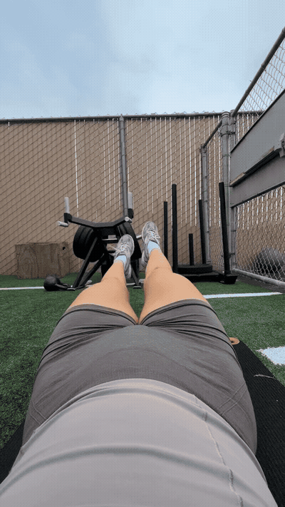
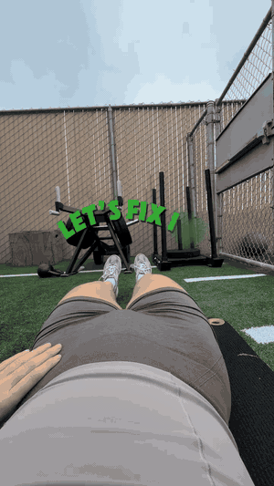
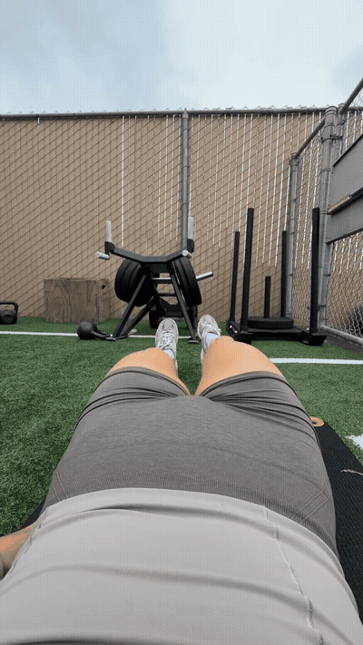
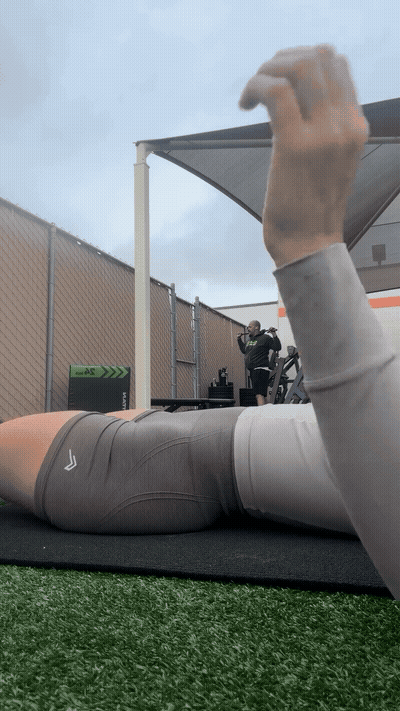
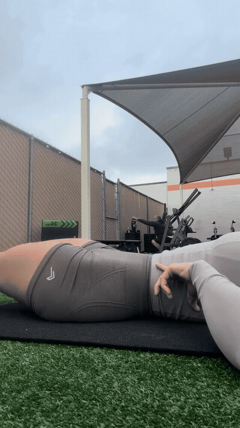

When you do flutter kicks with both legs and your belly domes/sticks out, your deep core (TVA) is disengaged — you see the belly rise as the low spine loses its anchor.

Core is already squeezed BEFORE the movement starts. Back is flat on the ground and the belly button is pushed INTO the ground.

Pulsate one leg at a time without letting the back come off the ground at all. 15 each leg, 3 sets. Looks easy; done right it challenges as hard as both-leg flutter kicks.

When the tummy sticks out, take a deep breath in, exhale ALL the oxygen out, and push the back into the ground before starting the movement. Core engaged = safe to move.

Once single-leg pulsing is clean and doming-free, work back up into both-leg flutter kicks. Post-baby, the single-leg version is the honest baseline.